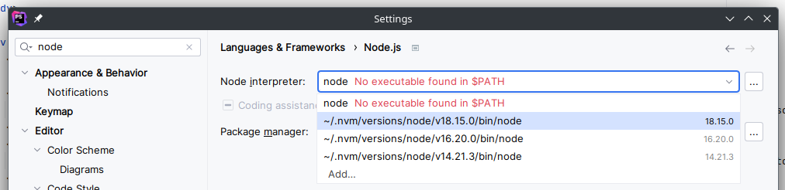
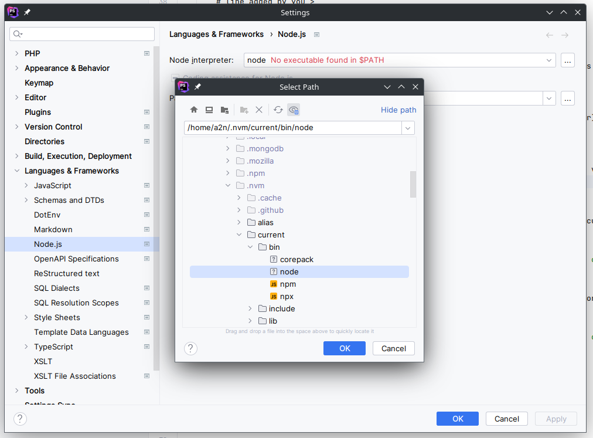
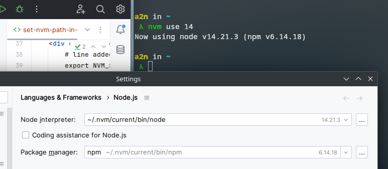

When using JetBrains tools with Node it is possible to define the desired path for Node in the settings (in general the software does it by itself).
If you use NVM this is also possible. But when we start using several versions of Node via NVM the software is not able to understand which path to use.

To solve this, the solution is to create and use a "universal" access path and therefore adaptable to the version.
This way we won't have to change this path when changing version with NVM (e.g. nvm use 16)
To do this you have to start by adding the following line to your .bashrc (or .zshrc, or whatever), it must be before the lines added by NVM during installation. This gives something like :
Don't forget to source .bashrc (or .zshrc, or whatever) or restart your console.
Now you just have to do nvm use 16 (replace 16 by the version you want to use) which will create the symlink.
Now the node version used by NVM will be linked to the .nvm/current folder
Finally in our settings we can define this folder to point dynqmically to the correct version of node :
When I change the node version to 14 the path is well updated :
